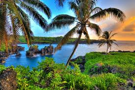
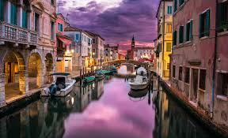

Hawaii

From the hustle and bustle of Oahu to the romance of Maui
and off-the-beaten-path pursuits on Lanai and Molokai, the
Hawaiian Islands offer enough to see, do and feel to fill a
lifetime’s worth of dreams. So where do you begin? Hawaii’s
spectacular beaches and lush valleys offer endless outdoor
experiences, including surfing, hiking, skydiving, helicopter
tours, paddle sports, whale-watching and zip lining. You can
also swim with manta rays at night, float down tunnels on old
sugar plantations and walk a lunar landscape at Garden of the
Gods. Choose your adventure and let the memories begin.
Hawaii is home to five active volcanoes. Four are located
on Hawaii Island: Kīlauea, Maunaloa, Hualālai and Maunakea.
The fifth, Haleakalā, is located on Maui. The most popular
place to see volcanoes in Hawaii is Hawaii Volcanoes National
Park, home to two active volcanoes: Kilauea and Maunaloa. There
is currently no lava flow in the park, but depending on conditions,
you may be able to see steam. Visitors are required to stay on
designated trails and should not approach lava. Check weather and
volcano conditions before visiting Hawaii Volcanoes National Park.
Marvel at colorful canyons, valleys and waterfalls while hiking
the 35.5-kilometer Napali Coast. Crystal-clear, turquoise waters
invite snorkeling in the Molokini Crater off the coast of Maui. Take
a surfing lesson to ride the waves at popular Waikiki Beach or trek
to the less-traveled island of Lanai to visit the Kaunolu Village Site,
a prehistoric Hawaiian fishing village. On Kauai, try waterfall rappelling,
tubing through old sugar plantation chutes or kayaking the serene Wailua
River amid ancient mountains and rainforests. Off the Kohala Coast of
Hawaii, December through April, take a whale-watching cruise at sunset and
listen to whale songs on an underwater hydrophone.
Paris

Lingering over pain au chocolat in a sidewalk café, relaxing after a
day of strolling along the Seine and marveling at icons like the Eiffel
Tower and the Arc de Triomphe… the perfect Paris experience combines leisure
and liveliness with enough time to savor both an exquisite meal and exhibits
at the Louvre. Awaken your spirit at Notre Dame, bargain hunt at the Marché
aux Puces de Montreuil or for goodies at the Marché Biologique Raspail, then
cap it all off with a risqué show at the Moulin Rouge.
People from all over the world are drawn to its cutting-edge fashion,
art, and culinary scenes, as well as a certain je ne sais quoi that appeals
to all kinds. While the attractions are plentiful on any Paris trip, this is
an insider's city, steeped in a rich history of riots and revolutions. Every
quarter is unique and, though the summer is the most popular season to visit,
each time of year is compelling in its own way.
From the hilly cobblestoned streets of Montmartre with its rich history of
Belle Époque artists and cabarets, to the quickly gentrifying neighborhood of
Belleville, arts and culture are steeped in the city’s DNA. Parisians sometimes
joke that they visit museums as often as they go to the bathroom, and to truly
understand Paris you have to immerse yourself in the city’s artistic culture.
Beyond the Louvre and the Musée d’Orsay, you can get your culture fix at the
renovated Picasso Museum and the new Fondation Louis Vuitton, not to mention
dozens of small museums and galleries.
Venice

The romantic city of Venice is located in the Veneto region of Italy — one
of the northernmost states. This ancient and historically important city was
originally built on 100 small islands in the Adriatic Sea. Instead or roads,
Venice relies on a series of waterways and canals.
One of the most famous areas of the city is the world-renowned Grand Canal
thoroughfare, which was a major centre of the Renaissance. Another unmistakable
area is the central square in Venice, called the Piazza San Marco. This is where
you’ll find a range of Byzantine mosaics, the Campanile bell and, of course,
the stunning St. Mark’s Basilica.